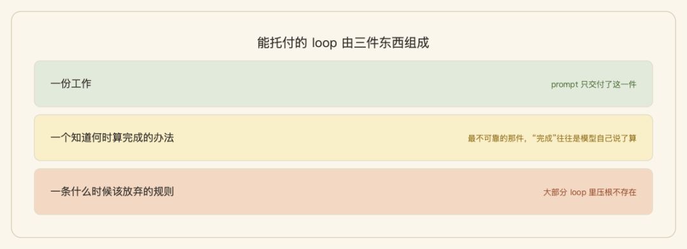
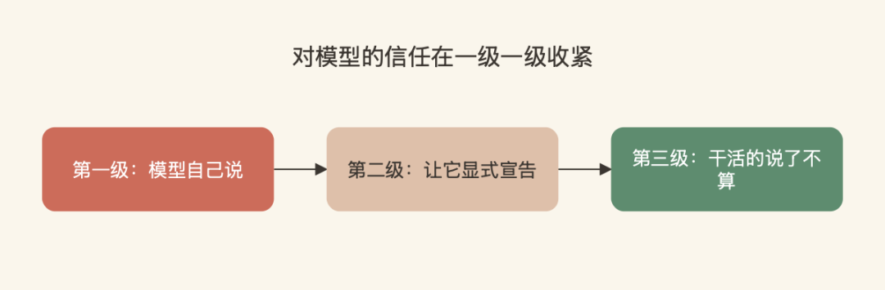
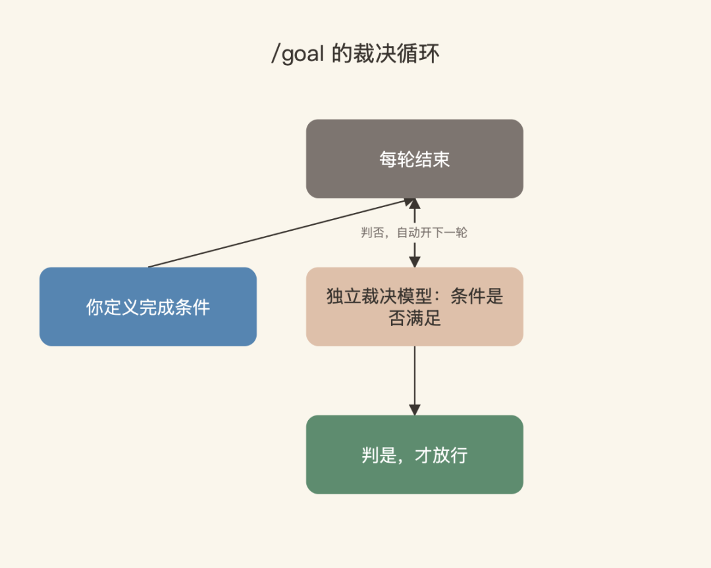

我们团队今年开始把一批周期性长任务交给 agent loop 跑：批量生成、批量审核、自动收尾。踩过的坑，现在回头看全是一个类型。
一次是夜里挂着跑批量任务，早上打开一看，agent 在一个死活过不去的环节上反复重试了一整晚——活没干成，token 烧出去一大截。一次是 loop 看起来很忙，每一轮都在输出，但连续几轮产出物一个字节都没变，纯原地打转。还有一次更冤：任务本身在中途已经被上游取消了，loop 不知道，继续兢兢业业地跑到天亮。
三次翻车，事后复盘没有一次是 prompt 的问题。prompt 都写得很清楚，问题出在同一个地方：我们只设计了它怎么跑，没设计它怎么停。
这一两年大家都在卷 prompt 怎么写、context 怎么管，但真正决定一个 loop 能不能放进生产环境的，是停止条件。这篇把这件事讲透：需要哪几条停止条件、主流框架实际给了你几条、以及"谁来判定做完"这件事上正在发生的一次有意思的演进。
一、Loop 的第三个部件，最没人写
一个能托付的 loop 由三件东西组成：一份工作、一个知道何时算完成的办法、一条什么时候该放弃的规则。这个定义来自 X 上一篇讲 loop 的科普长文（Anatoli Kopadze），我认为是对 loop 最精准的拆法——prompt 只交付了第一件，后两件都是停止设计。

绝大多数人搭 loop 时只写了一条停止条件：任务完成就停。这恰恰是三件里最不可靠的那件，因为"完成"往往是模型自己说了算。至于放弃规则——什么时候该认输、该止损、该交还控制权——大部分 loop 里压根不存在。
把我们这一年在生产里踩过的坑逐个复盘，再对照社区里的讨论，我把一个生产级 loop 该配的停止条件总结成了 8 条。X 上有位作者把这件事的要害说得很干脆：
a loop with one exit hangs. a loop with eight is a system.
只有一个停止条件的 loop 会挂死，配齐八个的 loop 才是一个系统。
这 8 条停止条件值得逐个过一遍。但比平铺 8 条更有用的，是看清它们其实在回答四个不同的问题。
二、8 个停止条件，其实是四类问题
| 类别 | 停止条件 | 回答的问题 |
|---|---|---|
| 成功类 | 目标达成 | 活干完了吗（可度量地） |
| 资源类 | 轮次上限 / 预算上限 / 时间截止 | 还烧得起吗 |
| 失败类 | 无进展检测 / 连续错误阈值 | 还在有效前进吗 |
| 外部类 | 人工中断 / 外部事件 | 这活还该继续吗 |
成功类停止条件：目标达成。 关键不在"停"，在"谁说了算"——由一个 evaluator 按 rubric 给产出打分，通过才停。它在工作可度量地完成时触发，而不是在模型自己说完成时触发。这是唯一一条大家会主动去设计的停止条件，剩下七条全是防御工程。
资源类停止条件：三种货币各设一道闸。 轮次上限管迭代次数，专治那个它永远不可能完成的任务，赶在你付出代价之前发现这一点。预算上限管 token 和钱，它在一轮运行的中途就能触发，正是能帮你省下凌晨账单的那道闸。时间截止管墙上时钟，与进展无关：当这次运行撞上 deploy 窗口或工作时间开始，到点就停。三道闸不可互相替代——轮次在边界结算，预算可能中途打断，时间完全独立于进展。
失败类停止条件：识别"忙碌但没有前进"。 无进展检测的实现很朴素——每轮对工作状态做个 hash，与最近几轮比对，连续三轮不变就停。比"看输出像不像在重复"客观得多，成本也低。连续错误阈值则是个会被成功清零的失败计数器：连续失败 n 次才触发，任何一次成功都重新计数——这个细节决定了它止损的是"朝同一堵墙整夜重试"，而不会误杀正常的试错。
外部类停止条件：世界变了，loop 要知道。 人工中断是高风险步骤前的审批闸门，加一个位于 loop 之外的 kill switch——这是唯一一条模型无法跟你争辩的停止条件。外部事件则是对任务真正关心的那件事做监听：PR 已经被人合并了、工单已经关闭了，活本身失去意义，loop 就该停。我们那次"任务被取消还跑到天亮"，缺的就是这一个。
对着这四类回看我们的三次翻车：整晚重试缺的是错误阈值和预算上限，原地打转缺的是无进展检测，白跑一夜缺的是外部事件。每一次生产事故，都能精准对应到一条没有设计到的停止条件。
三、框架实际给了你几条停止条件
需求清单有 8 条，主流框架内建了几条？昨天我把五家的文档和源码翻了一遍（所有默认值都以当前版本核对过），对照结果值得贴出来：
| 框架 | 硬上限（默认值） | 超限行为 | 完成信号 |
|---|---|---|---|
| Vercel AI SDK | 20 步 | 静默停止 | 默认隐式；可配 done 工具显式宣告 |
| OpenAI Agents SDK | 10 轮 | 抛异常 | 默认规则：产出期望类型的文本且无工具调用（隐式） |
| LangGraph | 25 步 | 抛异常 | 图到达终点 |
| Google ADK | 无限 | 正常结束 | 子 agent 显式 escalate |
| Claude Code | 无外部上限 | — | 模型自判（/goal 另论，见下节） |
三个观察。
第一，内建的基本只有轮次上限。 预算上限、时间截止、无进展检测、外部事件——需求清单上另外那些停止条件，五家几乎都没有内建，全要自己搭。需求 8 条、供给 2 条，中间的落差就是"能跑 demo"和"敢上生产"的距离。
第二，默认值就是态度。 OpenAI 默认 10 轮就抛异常，Google ADK 默认无限循环——官方文档明说：LoopAgent 自己不决定何时停，防止无限循环是开发者的责任。默认越宽松，跑飞的责任越压向你。用任何框架之前，先查它的默认上限是多少、超了之后是什么行为，这两个问题的答案比大部分 feature 都重要。
第三，超限之后怎么死，比会不会死更重要。 抛异常是吵闹地死（fail loud），静默停止是安静地死（fail silent）——而 silent 是会咬人的。
最好的实证是 LangGraph 的一个知名 issue：0.5.x 版本的预置 ReAct agent 触到步数上限、末尾还挂着待处理的工具调用时，不报错，而是静默注入一条固定文案的 AI 回复："Sorry, need more steps to process this request."，然后零异常正常结束。下游拿到一条看起来人畜无害的回复，实际上是截断信号，先后有四五拨用户把它当 bug 上报。后来 LangChain v1 把这个行为改回了直接抛错。框架社区用脚投了票：loop 超限必须吵闹地死，不能安静地装活着。
四、谁来判定"做完"：一条正在收紧的信任链
停止条件清单解决"有没有"，还有一个更深的问题：成功类里那个"做完"，到底谁说了算。过去一年多，这件事上的演进轨迹特别清晰——对模型的信任在一级一级收紧。

第一级：模型自己说。 最普通的 agent 循环就是这样，模型判断"任务已完成或需要更多上下文"就停。日常交互够用，但放到长任务上，"干活的模型给自己打分"这个结构性问题就暴露了——它太容易在第七轮宣布胜利，而实际做到的是七成。
第二级：让它显式宣告。 Vercel 的 done 工具、ADK 的 escalate 标志走这条路：完成不再靠"模型不再调工具"这种形态去猜，而要它显式调用一个终止信号。社区里流行的 Ralph loop 技法（把同一个 prompt 反复喂给 agent 直到做完）更直白：约定一个暗号，模型输出的暗号与配置逐字匹配才放行，然后在提示里写明——只有陈述为真时才许输出，"不要靠说谎来退出循环"。宣告是显式了，但真伪还是靠模型自觉。
第三级：干活的说了不算。 Claude Code 今年的 /goal 命令把这层捅破了：你定义完成条件，每轮结束后由一个独立的小快模型（默认 Haiku）来裁决条件是否满足——判否，自动开下一轮；判是，才放行。有个限定值得知道：这个裁决模型不调用工具，只依据干活的模型已经在对话里摆出来的证据下判断——它自己跑不了测试，所以你的完成条件要逼着干活的一方把证据晒出来。官方博客里那句设计说明值得原文引用：
When you define the success criteria, Claude doesn't have to make a determination on what is "good enough" and end the loop early.
当你定义了成功判据，Claude 就不必自己去裁定什么算"足够好"、然后提前结束循环。
裁决完成与否的，是一个没干活的新鲜模型。这跟人类组织里的演进一模一样：从自我汇报，到交付物验收，再到独立质检。Ralph 的暗号和 /goal 是同一个问题的两代答案——从"求模型别骗我"，到"不信模型自己说"。

这条线其实是之前那篇《Anthropic 拆解当下最火的 loop：四层设计加停止条件》的延伸——那篇讲清了"说不清做完就用不好 agent"，这篇再往下走一步：说清了做完，还要想好由谁来验收。
五、写 loop 之前，先填这张停止条件表
方法论落到操作上，就是把停止条件当成 loop 的第一张设计表。每次要把一个任务包进 loop 之前，先把这张表填完：
| 停止条件 | 要回答的问题 | 最低配置参考 |
|---|---|---|
| 目标达成 | 什么算做完？谁来验收？ | 可量化判据（测试通过数 / 分数阈值），能独立验收最好 |
| 轮次上限 | 最多迭代几轮？ | 显式数字，写进 harness 不是 prompt |
| 预算上限 | 最多烧多少 token / 钱？ | 按任务价值倒推，宁紧勿松 |
| 时间截止 | 什么时刻必须停？ | 对齐 deploy 窗口 / 工作时间 |
| 无进展 | 连续几轮没变化算卡死？ | 状态 hash 比对，三轮不变即停 |
| 错误阈值 | 连续失败几次止损？ | 计数器，成功清零 |
| 人工中断 | 哪些步骤必须人批？kill switch 在哪？ | 高危操作前置审批，开关放 loop 外 |
| 外部事件 | 什么外部变化会让任务失去意义？ | webhook 或轮询，盯着任务真正关心的对象 |
填不满不要紧，但每一行都要有意识地做过取舍——"这条我不需要"是个决定，"这条我没想过"是个隐患。八行里最低配的四行：可量化的完成判据、轮次上限、预算上限、无进展检测。前两行 Anthropic 官方给过一个很好的示范写法，一句话同时装上语义目标和轮数兜底："把首页 Lighthouse 分数提到 90 以上，最多试 5 次"——正确地停和一定会停，双保险各管一头。
有个细节别混淆：这句里的"最多试 5 次"走的是 /goal 的软判路线，由裁决模型从对话里数轮次，不是 harness 里的确定性计数——跟表格第二行说的硬上限是两回事。生产环境两道都上：软的管语义，硬的管兜底。
顺便说一句，把判据写成可量化这件事本身，也是前面提到那篇旧文里讲过的老话题：越量化，越容易被独立验证；越模糊，越依赖模型自觉。停止条件表的质量，一大半取决于第一行写得够不够硬。
六、写在最后
回到开头那三次翻车。它们教会我的不是"prompt 要写得更好"，而是一个顺序问题：停止条件设计在前，任务描述在后。 这个顺序，还是 X 上那位作者说得最干脆：
write the exits before you write the prompt.
先写停止条件，再写 prompt。
往大了说一层：一个团队能不能把 agent 从演示推进到生产，模型选型和 prompt 功夫都不是分水岭，分水岭是每一个跑着的 loop 有没有配齐该有的停止条件、"做完"由谁验收。
落到动作上就一件事：回去把你手上正在跑的 loop（或者那个挂在 cron 上的 agent 任务）打开，对着上面那张表数一数它有几条停止条件。我猜大概率是一条。补上轮次、预算、无进展这三个，你就跑赢了大多数还在裸奔的 loop。